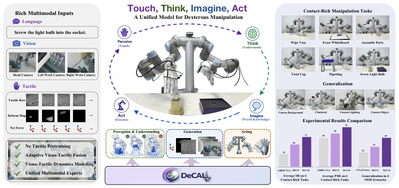
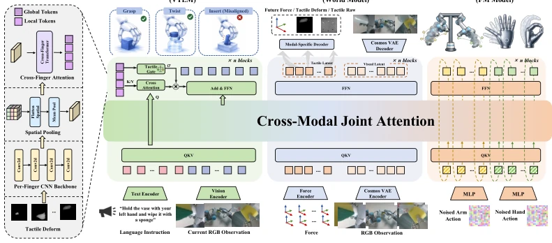
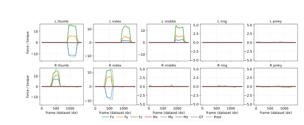
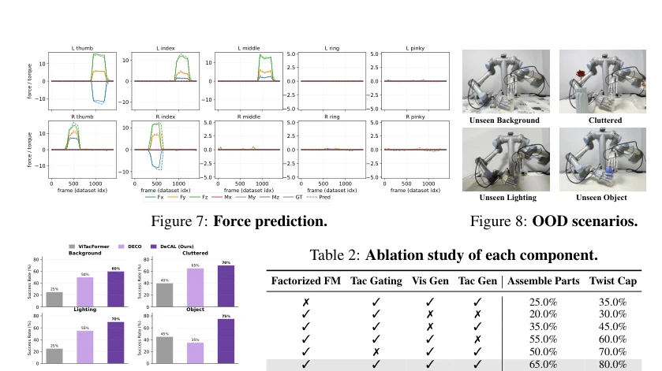
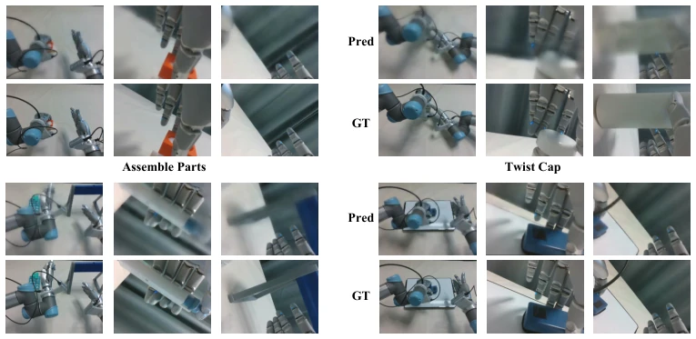
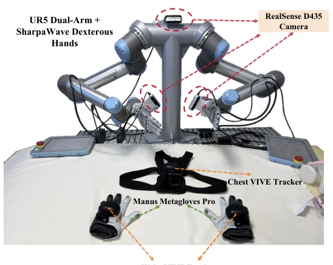
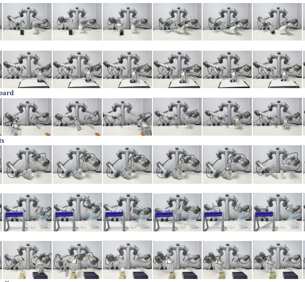
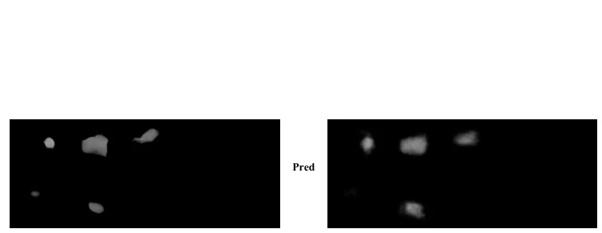

DeCAL attempts to equip VLA models with "tactile nerves", with a loud slogan—"physical grounding". Actually, the core is to make tactile signals smarter, not simply stacking, but implementing a "gating" mechanism, listening less to touch when not in contact, and more when in contact. Architecturally, it employs a three-expert hybrid Transformer, which sounds high-end, but essentially means understanding, imagining, and acting work separately. However, this model relies heavily on hardware, SharpaWave finger sensors and specific teleoperation systems are indispensable, changing sensors would likely require re-tuning parameters. Moreover, the term "co-imagining" sounds esoteric, essentially it is predicting future tactile and visual latents, counting as adding a tactile patch to the world model. Overall, it is indeed strong in contact-rich tasks, but when generalizing to unseen objects, the 75% success rate also indicates it is still short of "generalization", after all, no large-scale pre-training was done.
Existing VLA models are mostly "eye-high hand-low", visual dominance leads to susceptibility to occlusion in contact-rich tasks [1, 2]. Although some work introduced touch [30], most are just passive fusion, lacking explicit modeling of physical contact dynamics. For example, DECO [32] although used a tactile adapter, is mainly reactive, unable to predict contact changes. This leads to robots easily "slipping hands" or "feeling blindly" in fine operations like screwing, assembly, etc. DeCAL aims to solve this pain point: how to let the model not only "see" objects but also "feel" contact forces, and predict future physical states based on this, thereby achieving more robust fine manipulation. Existing methods often ignore the dynamics of touch, leading to strategy failure in complex interactions.

Figure 1: We present DeCAL, a physically-grounded dexterous VLA model that unifies perception, understanding, imagination, and action within a framework. Equipped with rich multimodal inputs, DeCAL achieves strong performance across diverse contact-rich dexterous manipulation tasks and demonstrates robust generalization to unseen scenarios.
DeCAL is based on MoT architecture, divided into three experts: understanding, generation, and action. The understanding expert uses Qwen3-VL to encode vision and language, and fuses touch via cross-attention. The generation expert is responsible for "imagining", predicting future visual latent (using Cosmos VAE) and tactile latent (force/deformation), thereby modeling physical dynamics. The action expert uses Flow Matching to generate actions, but the key innovation is Factorized Flow Matching, decoupling manipulator and dexterous hand actions to avoid dynamics difference interference. The most ingenious part is adaptive tactile fusion, calculating gating weight sigma via global tactile token, dynamically adjusting the importance of tactile input. This design lets the model rely mainly on vision when not in contact, automatically switch to tactile dominance when in contact, achieving true "appropriate touch". Additionally, attention mask ensures unidirectional information flow, preventing the action expert from "spoiling" future states.

Figure 2: DeCAL is built upon a MoT architecture that unifies scene understanding, visuo-tactile dynamics foresight, and action generation. The Action Expert employs Factorized Flow Matching to decouple arm and hand motion, enabling better coordination and dexterous manipulation.
Tested on 6 real contact-rich tasks, such as screwing lightbulbs, wiping whiteboards. DeCAL average success rate 71%, far exceeding GR00T (32%) and DECO (56%). Under OOD scenarios like unseen background, lighting, objects, generalization ability significantly outperforms baselines, e.g., reaching 75% under unseen objects. Ablation experiments prove tactile gating and tactile generation contribute most to performance improvement, removing gating causes assembly task success rate to plummet. Visualization shows tactile latent can clearly cluster different contact modes, proving the model indeed learned physical interaction laws. Inference latency 0.27s, meets real-time requirements.

Figure 7: Force prediction.

Figure 9: Generalization results.

Figure 10: Qualitative Results of Future Visual Generation.
其他图片Other Figures

Figure 11: Real Robot Platform. Our setup consists of a dual UR5 robotic arm and a pair of SharpaWave five-finger dexterous hands. Visual observations are captured with one head-mounted and two wrist-mounted cameras, while high-resolution tactile data are collected from each fingertip. Expert demonstrations are acquired via a wearable glove-tracker teleoperation system.

Figure 12: Visualization of task progress.

Figure 13: Qualitative Results of Future tactile deform Generation.